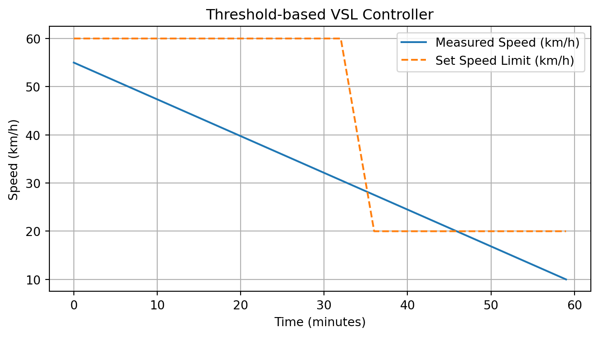
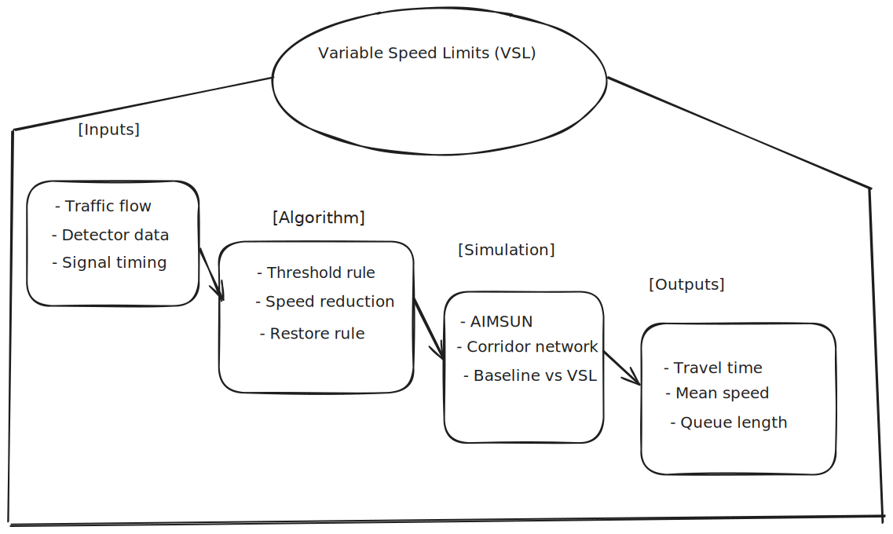
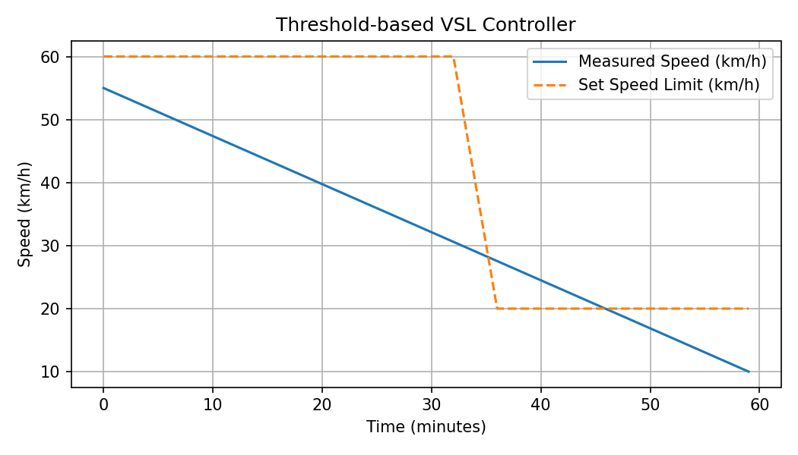

Evaluating Variable Speed Limits on an Urban Arterial
Introduction
Congestion is a persistent issue in urban transport networks. Variable Speed Limits (VSL) are a control strategy to smooth traffic, reduce shockwaves, and improve travel times.
As shown in ?@fig-scheme, the project workflow consists of inputs, a VSL control algorithm, simulation, and performance outputs.
{#fig-scheme “Schematic of the project showing inputs, algorithm, simulation and outputs.”}
Methods
Traffic flow model
We use the Lighthill–Whitham–Richards (LWR) kinematic wave model with a parabolic fundamental diagram:
\[ q(\rho) = v_f \rho \left(1 - \frac{\rho}{\rho_{max}}\right), \]
where:
- \(q\) is the flow (veh/h),
- \(\rho\) is the density (veh/km),
- \(v_f\) is free-flow speed (km/h),
- \(\rho_{max}\) is jam density (veh/km).
The average speed is:
\[ v(\rho) = \frac{q(\rho)}{\rho} = v_f \left(1 - \frac{\rho}{\rho_{max}}\right). \]
VSL controller
The threshold-based controller adjusts the posted speed limit \(v_{set}\) according to measured speed \(\hat{v}(t)\):
\[ v_{set}(t+1) = \begin{cases} v_{set}(t) - \Delta v, & \hat{v}(t) < v_{th}, \\ v_f, & \hat{v}(t) \geq v_{th}, \end{cases} \]
where \(\Delta v\) is a fixed decrement step (e.g., 10 km/h).
Simulation setup
- Corridor length: 2 km
- 4 signalized intersections
- Detector spacing: 500 m
- Simulation horizon: 1 h
- Scenarios: baseline (fixed speed) vs. VSL (adaptive control)
Example Python simulation
Results
Figure ?@fig-vsl shows the comparison between measured traffic speed and the dynamically updated VSL. The VSL reduces oscillations when traffic approaches congestion.
{#fig-vsl “Measured speed vs. VSL set speed over time.”}
Discussion
VSL stabilizes speed under high demand and prevents stop-and-go waves.
The controller improves average travel time and reduces queue lengths.
The model is simplified (deterministic demand, no driver heterogeneity).
Future work: integrate stochastic demand, calibration with real detector data.
References
Lighthill, M. J., & Whitham, G. B. (1955). On kinematic waves II: A theory of traffic flow on long crowded roads.
Newell, G. F. (1993). A simplified theory of kinematic waves in highway traffic.